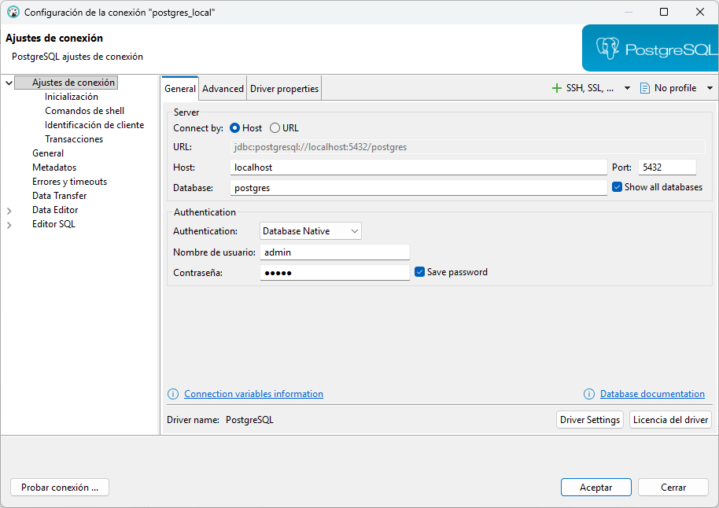
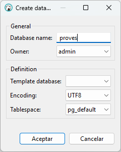

1. Introducción
Hasta ahora hemos trabajado con un servidor PostgreSQL en la nube que tenía dos bases de datos: geo y factura. En estas bases de datos únicamente hacíamos consultas (SELECT) y nadie modificaba la estructura ni los datos, por eso no existían conflictos.
A partir de ahora, con las sentencias de DDL y DML, haremos lo siguiente:
- DDL → crear y eliminar tablas, columnas, esquemas…
- DML → insertar, modificar y eliminar datos
Por tanto, no nos conviene en absoluto trabajar sobre la Base de Datos geo ni sobre factura, ya que lo que haríamos sería "boicotearnos" entre nosotros.
Así, a partir de ahora, en lugar de hacer uso de un servidor alojado en la nube, trabajará con un servidor PostgreSQL de forma local, utilizando contenedores Docker. En cualquier caso, seguiremos utilizando el cliente DBeaver para conectarnos y gestionar la base de datos. Trabajaremos con dos Bases de Datos nuevas en local utilizando contenedores:
- pruebas: servirá para realizar pruebas, como su propio nombre indica. Todos los ejemplos del tema los realizaremos en esta BD.
- factura_local: tendrá una Base de Datos para cada uno en local. Es donde tendrá que trabajar los ejercicios.
Vamos a realizar la instalación:
1.1 Instalación de Docker
🔹Windows
1) Verifica los requisitos y activa la virtualización/WSL2:
Activa WSL 2 y comprueba la versión con: wsl --version (Si no aparece, instala/actualiza con: wsl --install / wsl --update).
2) Instala Docker Desktop: https://www.docker.com/products/docker-desktop
3) Asegúrate de que Docker Compose está disponible (normalmente viene incluido con Docker Desktop):
Ejecuta: docker compose version y, si responde con una versión (por ejemplo, “Docker Compose version vX.Y.Z”), está instalado y accesible en tu PATH.
🔹Ubuntu (en las aulas del centro educativo no hace falta realizar la instalación)
1) Instala Docker:
sudo apt update
sudo apt install docker.io
2) Instala Docker Compose:
sudo apt install docker-compose
1.2 PostgreSQL con Docker Compose
1) En una carpeta, por ejemplo, docker/postgres_local, crea el archivo vacío docker-compose.yml. El archivo docker-compose.yml define el contenedor de PostgreSQL, su configuración y los puertos para conectarse desde DBeaver.
Copia el siguiente contenido dentro del archivo docker-compose.yml
servicios:
postgres:
image: postgres:16.4
container_name: postgres_local
environment:
POSTGRES_USER: admin
POSTGRES_PASSWORD: admin
POSTGRES_DB: postgres
puertos:
- "5432:5432"
volúmenes:
- postgres_fecha:/var/lib/postgresql/fecha
volúmenes:
postgres_fecha:
2) Alza el servicio:
En la carpeta donde está el docker-compose.yml, ejecuta en la terminal:
docker compose up -d
Explicación de los principales campos:
- image: indica qué imagen de PostgreSQL utilizar (en este ejemplo, la versión 16.4).
- container_name: nombre que tendrá el contenedor.
- environment: define el usuario, la contraseña y la base de datos que se crearán inicialmente.
- puertos: mapea el puerto local 5432 al puerto 5432 del contenedor, permitiendo conectarse desde DBeaver.
- volumas: mantiene los datos persistentes aunque el contenedor se detenga o se vuelva a crear.
Consejo
Puedes personalizar POSTGRES_USER, POSTGRES_PASSWORD y POSTGRES_DB según las necesidades de tu proyecto.
1.3 Crear una conexión desde DBeaver al servidor PostgreSQL creado con Docker
Una vez que el contenedor PostgreSQL está en funcionamiento, puedes conectarte desde DBeaver siguiendo estos pasos:
1) Abre DBeaver y conéctate al servidor PostgreSQL utilizando las credenciales definidas en el docker-compose.yml.
2) Haz clic en Database → New Database Connection.
3) Selecciona PostgreSQL y haz clic en Next.
4) Introduce los datos de conexión definidos en el archivo docker-compose.yml:
- Host: localhost
- Puerto: 5432
- Database: Postgres
- Username: admin
- Password: admin

5) Haz clic en Test Connection/Probar Conexión para comprobar que la conexión funciona correctamente.
6) Si todo es correcto, haz clic en Aceptar. Ahora podrás ver y gestionar la base de datos PostgreSQL desde DBeaver.
Nota
Si tienes problemas de conexión, comprueba que el contenedor está en funcionamiento con docker ps y que el puerto 5432 no está ocupado por otro servicio.
1.4 Crear bases de datos dentro de la conexión postgres_local
Creamos las bases de datos pruebas y factura_local dentro de la conexión postgres_local porque esta conexión corresponde al servidor PostgreSQL que tenemos instalado en local con Docker.
1) Haz clic derecho sobre la conexión: postgres_local.
2) Selecciona: Create → Database
3) En la ventana escribe el nombre de la base de datos: pruebas

4) Haz clic derecho sobre la conexión postgres_local.
5) Pulsa Refresh / Actualizar.
6) Comprueba que aparece la base de datos pruebas en la lista.
7) Da los mismos pasos para la base de datos: factura_local
IMPORTANTE
Le recomiendo que se cree otra conexión para cada una de las Bases de Datos anteriores. De esta manera, seguramente tendrá tres conexiones: la de postgres_local , la de factura_local y la de pruebas, además de las conexiones al servidor en la nube, geo y factura.
Licenciado bajo la Licencia Creative Commons Reconocimiento NoComercial CompartirIgual 3.0